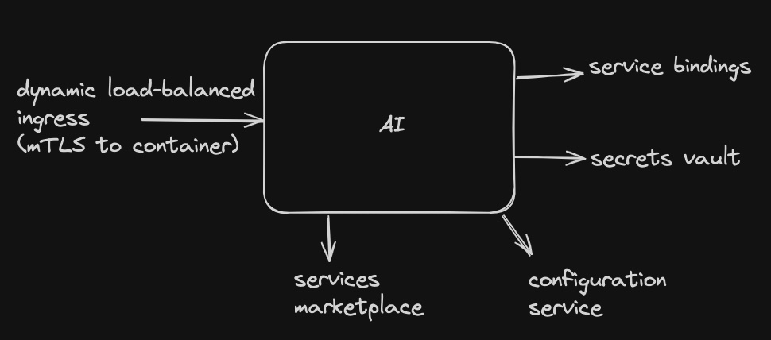
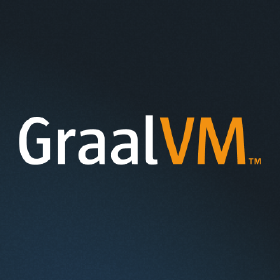
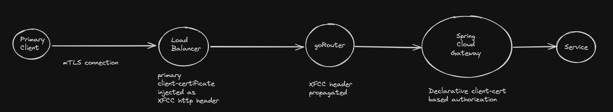
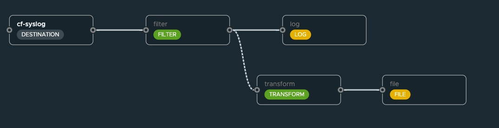

tPCF - 'Unknown' SuperPowers
tPCF is already the best place to run your spring applications
but how/why is this the case?
So how can we make it better?
How can we demonstrate that we continue to innovate on tPCF?
Can we use tPCF to showcase spring innovation?
Can we 'remind' our customers of the 'cloud' experience 'cloud foundry' provides!
How's tPCF the best place to run your spring apps?
2 hour install / 2 minute (dev) onboarding
Runs on almost any vSphere version
Converts vSphere into immutable infrastructure
Multi-tenant with extremely effecient on-boarding
and we never need to 'reinstall'/ 'migrate' (for upgrades)
"Almost forgotten" inherent tPCF value
tPCF 'includes' a 'service-mesh' provides turnkey transparent-mTLS to container
...lots of 'batteries included'
Batteries Included
service mesh
image registry
container build system
platform app-restacking / rebasing
secrets vault
services marketplace!!!
"App" ecosystem value in tPCF (highlights)

So... What's New though? :-)
How about shrinking (some of your) apps' memory overhead by 90%+?

..but that's too complicated for my build-system...
what if the 'platform' could non-disruptively attempt native image compilation from
JIT compiled* apps already in the platform?
cf-java-optimizer.sh [appname]
Downloads unstaged 'jar' back from tPCF
Pushes it as new app, with native image cnb buildpack
Resizes to 'tiny' footprint after staging
Add new app to original app ingress route
How about tPCF image portability?
Did you know.. tPCF supports droplet-download / droplet-deploy?
cf download-droplet [appname]
cf push [appname] --droplet [droplet-file]
We can stage native images 'elsewhere' (iso-seg/foundation)
native image 'objection #1' handled (noisey neighbor stagers in prod)
Gives tPCF-at-the-edge a shot of adrenaline?
small footprint.. registry, ingress, tls, vault, and marketplace embedded!
Additional tPCF material for best-in-class Java platform
Gabry - experimental droplet-dockerfile generator
Anthony Dahanne - tanzu lightning demo for CDS/AOT java buildpack
tPCF's embedded SpringCloudGateway for cert-based authorization

hidden superpower - SCG's unique container-2-container integration on backend
Streaming apps with multi-port TAS source adapters

hidden superpower - TAS can host apps with multiple listen ports including TCP ingress